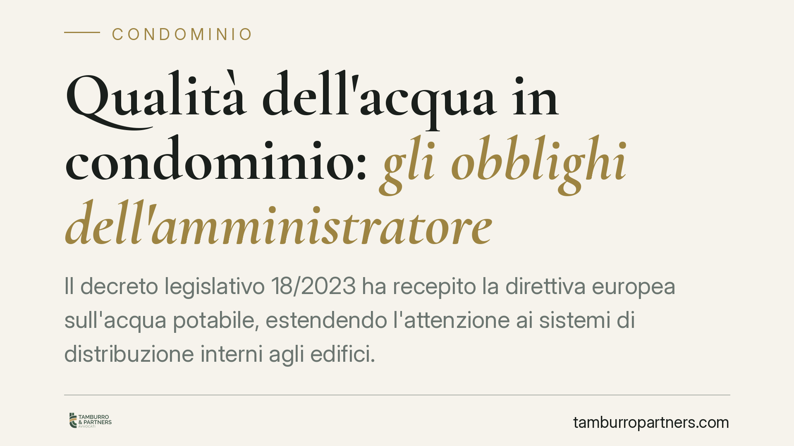
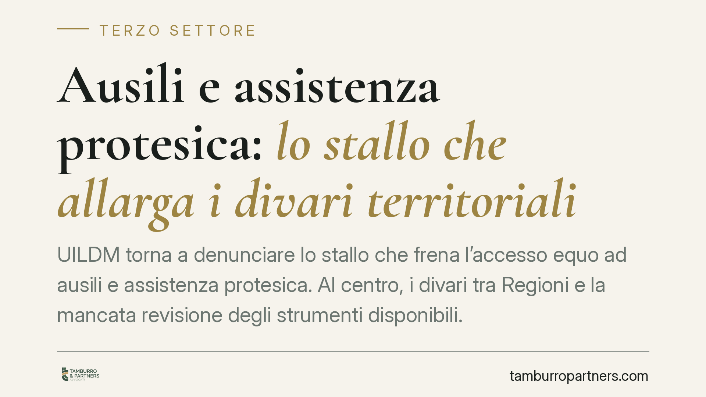
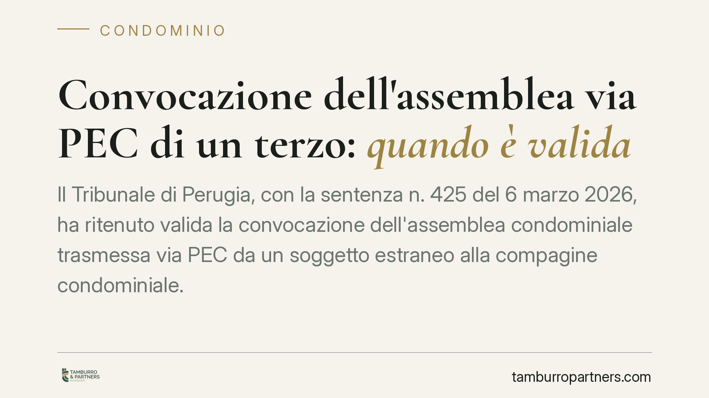

Assenza ingiustificata e NASpI: cosa cambia con il Collegato Lavoro
Il Collegato Lavoro ha cambiato le regole per chi abbandona il posto senza avvisare. L'assenza ingiustificata protratta oltre una certa soglia viene ora equiparata a dimissioni vol…

Condizionatore che sporge sul tetto o sullo spazio del vicino: limiti e rimedi
Montare un condizionatore che sporge sul tetto o sullo spazio del vicino può violare la proprietà altrui e le regole condominiali. La legge tutela lo spazio sovrastante il fondo e …

Gender pay gap e gender pension gap: perché le donne guadagnano e prendono di meno
Le donne in Italia guadagnano meno e maturano pensioni più basse. Non è un caso: retribuzioni inferiori e carriere interrotte dalla cura familiare si traducono in minori contributi…

Vendita di auto rubata: perché il contratto resta valido
La vendita di un veicolo di provenienza furtiva non produce nullità del contratto, ma apre il campo ai rimedi contro l'inadempimento. La distinzione tra vendita di cosa altrui e co…

Oneri accessori nella locazione: come contestare le spese condominiali
Una recente pronuncia del Tribunale di Roma torna sull'annoso tema del rimborso delle spese condominiali chieste dal locatore all'inquilino. Il principio è netto: senza documentazi…

Il legatario e i debiti condominiali: chi paga e in che misura
Chi riceve in eredità un appartamento tramite legato può trovarsi a fronteggiare i contributi condominiali non pagati dal defunto. La questione tocca il rapporto tra legatario, ere…

Auto abbandonate nel cortile condominiale: come rimuoverle
Un'auto ferma da mesi nel cortile occupa un posto e degrada l'area comune. Ma non tutti i veicoli inutilizzati sono uguali: cambia molto se il proprietario è un condomino, un estra…

Straordinari obbligatori? Limiti, diritti e sanzioni
Il lavoro straordinario è ammesso, ma entro limiti precisi. Il datore non dispone di un potere illimitato e il dipendente non è sempre libero di rifiutare. Capire quando lo straord…

Qualità dell'acqua in condominio: gli obblighi dell'amministratore
Il decreto legislativo 18/2023 ha recepito la direttiva europea sull'acqua potabile, estendendo l'attenzione ai sistemi di distribuzione interni agli edifici. Per i condomini con i…
Personale scolastico e permanenza in servizio oltre l'età ordinaria: perché serve prudenza sulle notizie non verificate
Circolano notizie su una decisione che avrebbe rimosso un limite d'età per il personale scolastico. Al momento la pronuncia non risulta identificabile con estremi certi e il quadro…
Videocamere in immobile in comproprietà: limiti privacy e risarcimento
La Corte d'Appello di Catanzaro ha ordinato la rimozione di videocamere installate in un immobile in comproprietà, ritenendo l'installazione lesiva della riservatezza altrui. Ha pe…
Telelavoro dei frontalieri Italia-Svizzera: il doppio limite fiscale e previdenziale
Il lavoro da remoto ha reso quotidiana una domanda prima marginale: quanti giorni può lavorare da casa un frontaliere italiano alle dipendenze di un datore svizzero? Le regole prev…

Ausili e assistenza protesica: lo stallo che allarga i divari territoriali
UILDM torna a denunciare lo stallo che frena l'accesso equo ad ausili e assistenza protesica. Al centro, i divari tra Regioni e la mancata revisione degli strumenti disponibili. La…

Convocazione dell'assemblea via PEC di un terzo: quando è valida
Il Tribunale di Perugia, con la sentenza n. 425 del 6 marzo 2026, ha ritenuto valida la convocazione dell'assemblea condominiale trasmessa via PEC da un soggetto estraneo alla comp…

Negozio con ingresso autonomo: si paga comunque il portiere?
Chi possiede un locale commerciale con ingresso autonomo si chiede spesso se debba contribuire al servizio di portierato che, in apparenza, non utilizza. La risposta ruota attorno …

Domanda di mediazione condominiale: come redigerla per evitare l'improcedibilità
Nelle controversie tra condomini o con l'amministratore, la mediazione è una condizione obbligatoria prima del processo. Ma non basta avviarla: la domanda deve rispecchiare con pre…

Amministratore in prorogatio: quando il contratto non vincola il condominio
Due sentenze del 2026 mettono un punto fermo: l'amministratore in prorogatio, cioè quello cessato che resta operativo fino alla nomina del successore, non può firmare contratti a l…

Polizze unit linked e obblighi informativi dell'assicuratore
Le polizze unit linked pongono un problema ricorrente: cosa accade se la compagnia non informa correttamente il risparmiatore sui rischi dell'investimento sottostante. Il tema tocc…

Limite dei 70 anni nella scuola: cosa può cambiare dopo la Corte Costituzionale
Il tetto anagrafico dei 70 anni per il personale scolastico torna al centro del dibattito dopo l'intervento della Corte Costituzionale. La questione tocca migliaia di docenti e col…

Mozziconi lanciati dal balcone: responsabilità e tutele in condominio
Chi lancia mozziconi accesi dal balcone non compie una banale inciviltà: la condotta può integrare un reato e fondare una richiesta di risarcimento. Il vero ostacolo per chi la sub…

Ordine del giorno generico e validità della delibera condominiale
Un ordine del giorno formulato in modo vago non comporta automaticamente l'annullamento della delibera condominiale. Secondo la Cassazione, ciò che conta è che i condomini abbiano …

Opzione donna 2026: il diritto maturato resta esercitabile
Nonostante la mancata proroga per il 2025, l'accesso a Opzione donna resterebbe possibile per chi ha maturato i requisiti entro il 31 dicembre 2024. Il tema riguarda molte lavoratr…

Vendita con riserva di proprietà: la revoca non genera doppia imposta
La Corte di giustizia tributaria di Roma ha respinto la pretesa dell'Agenzia delle Entrate che chiedeva una nuova imposta di registro sulla revoca di una vendita con riserva di pro…

Danni all'immobile locato: l'inquilino paga anche il canone del periodo di inagibilità?
Quando l'inquilino riconsegna la casa gravemente danneggiata, il proprietario può chiedere non solo il costo delle riparazioni, ma anche il mancato guadagno per il periodo in cui l…

Carburanti e tutela dei consumatori: cosa può fare un'associazione del terzo settore
Una nota di Federconsumatori denuncia un rialzo dei prezzi di benzina e diesel ritenuto superiore al giustificato dopo il venir meno del taglio delle accise. Il caso offre l'occasi…

L'amministratore revocato dal giudice può ancora convocare l'assemblea?
La revoca dell'amministratore disposta dal giudice produce effetti immediati: chi è stato rimosso perde i poteri gestori, compreso quello di convocare l'assemblea. Le delibere assu…

Auser, il ricambio ai vertici e la governance nel Terzo settore
Enrico Piron è il nuovo presidente nazionale di Auser, storica associazione di promozione sociale legata al mondo Cgil. Il ricambio ai vertici succede alla presidenza di Domenico P…

Fiscalità del Terzo settore: il nodo commerciale/non commerciale
La qualificazione fiscale delle attività degli enti del Terzo settore resta uno dei temi più delicati della riforma. La distinzione tra attività commerciali e non commerciali, disc…

Servizio civile universale: cosa cambia per il Terzo settore con il nuovo DDL
La Camera ha approvato il disegno di legge in materia di politiche giovanili e servizio civile universale. La CNESC segnala il rischio di un ridimensionamento del Terzo settore e l…

Risoluzione del contratto per inadempimento: quando è possibile
Non ogni inadempimento consente di liberarsi da un contratto. La legge chiede che la violazione sia "di non scarsa importanza". Capire dove passa questa linea è decisivo: sbagliare…